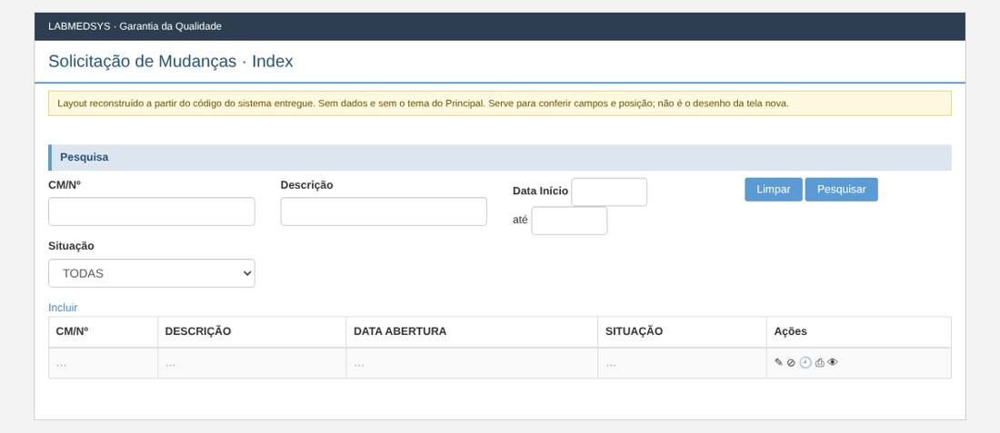
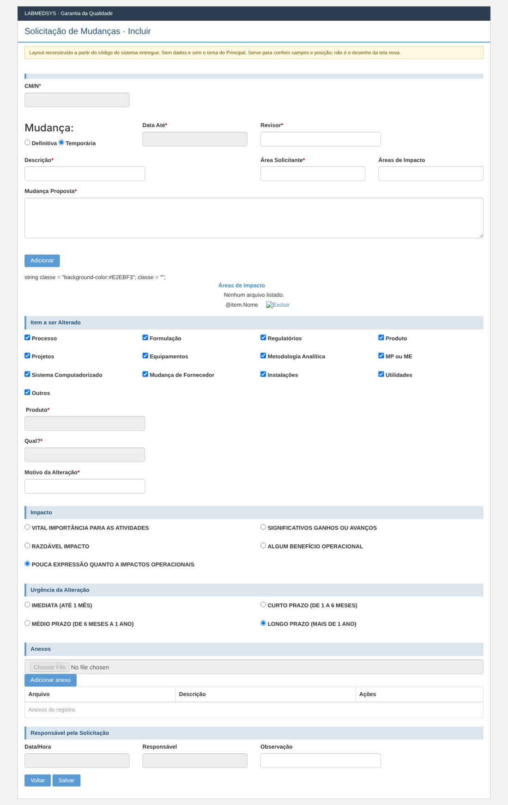
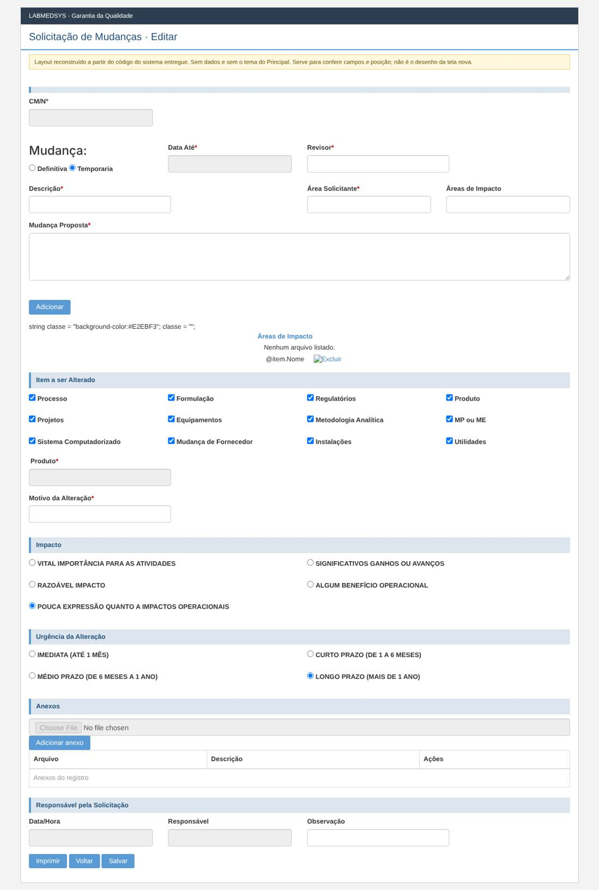
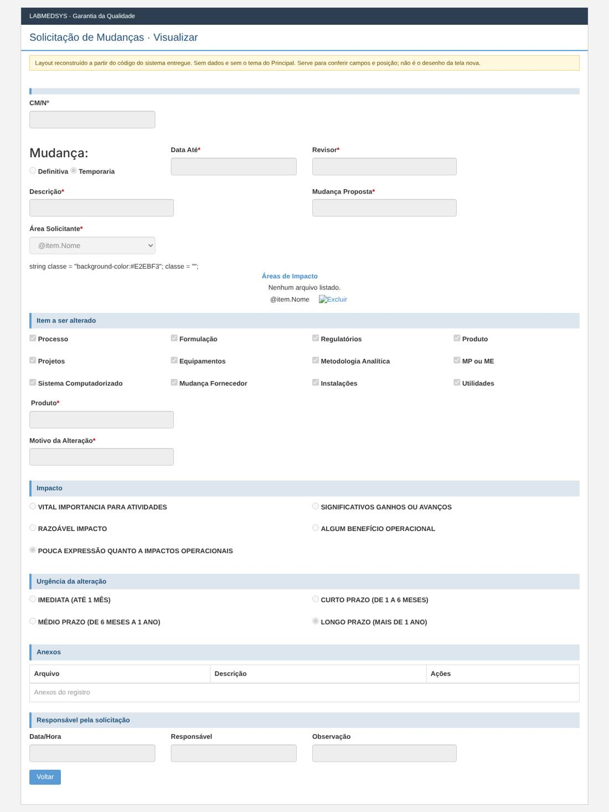
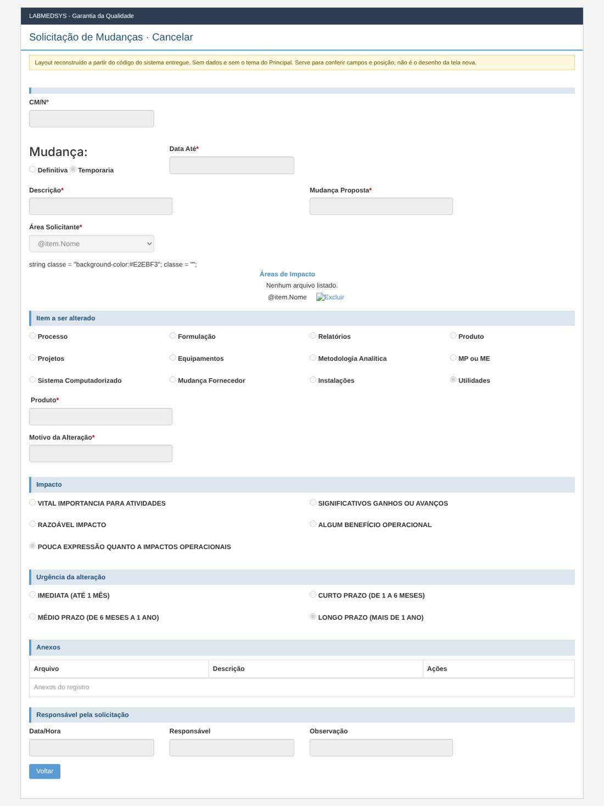
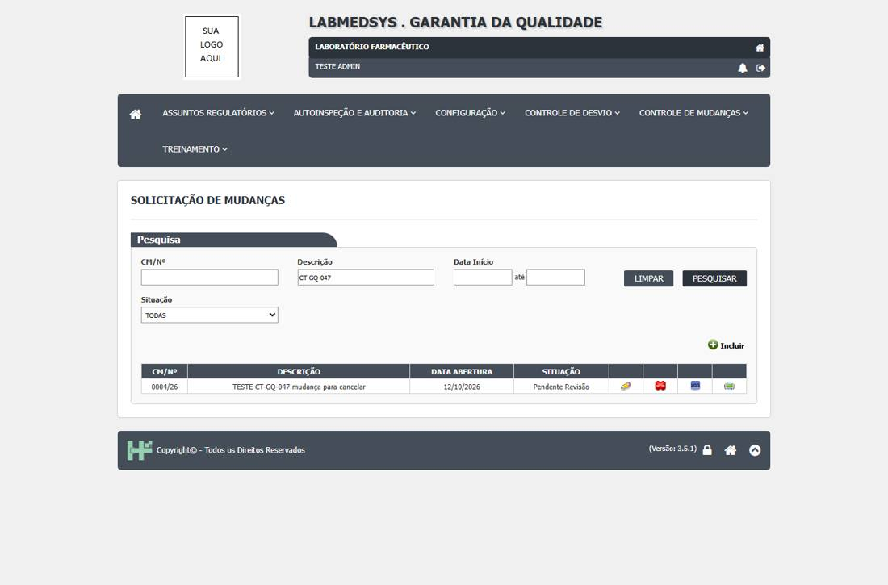

Menu: Garantia da Qualidade · Controle de Mudanças · Ficha: rascunho automático, a completar · Origem no sistema entregue: SolicitacaoMudanca
As telas novas seguem o processo e as regras do sistema entregue, sem transcrever o que for falha de código, de conceito ou de campo mal colocado. Cada decisão na ficha é Manter, Corrigir ou Ideal depois.
Como é a tela no sistema entregue (layout reconstruído)
Reconstruído a partir do código das páginas do sistema entregue: mostra os campos, os rótulos, os asteriscos de obrigatório e a posição. Não tem dados e não usa o tema do Principal; os prints reais estão logo abaixo. Opções marcadas por padrão (caixas e botões de opção) são do código, não de dados.
Lista

Incluir

Editar

Visualizar

Cancelar

Prints reais do sistema entregue (testes de 12/10/2026)
Telas do ambiente de teste do sistema entregue, tiradas durante os casos de teste da GQ.
Caso CT-GQ-047

Levantamento no código (rascunho automático)
A ficha completa desta tela ainda não foi escrita. Abaixo está o levantamento automático feito no código do sistema entregue: páginas, rotas, campos, modelos, regras de validação do servidor, situações e mensagens.
Menu: Garantia da Qualidade › Controle de Mudanças › Solicitação de Mudanças
Origem no legado: área RM, controlador SolicitacaoMudancaController (HSolutions.GQ.UI/Areas/RM/Controllers/SolicitacaoMudancaController.cs)
Estado: rascunho automático do levantamento; a ficha completa fica em ../fichas/.
Este levantamento descreve o comportamento atual do sistema entregue, sem julgamento. A decisão do que manter, corrigir ou deixar para o ideal está na ficha completa.
1. Páginas da tela
| Página | Arquivo | Modelo |
|---|---|---|
| Cancelar | HSolutions.GQ.UI/Areas/RM/Views/SolicitacaoMudanca/Cancelar.cshtml | SolicitacaoMudancaSalvarModel |
| Editar | HSolutions.GQ.UI/Areas/RM/Views/SolicitacaoMudanca/Editar.cshtml | SolicitacaoMudancaSalvarModel |
| Incluir | HSolutions.GQ.UI/Areas/RM/Views/SolicitacaoMudanca/Incluir.cshtml | SolicitacaoMudancaSalvarModel |
| Index | HSolutions.GQ.UI/Areas/RM/Views/SolicitacaoMudanca/Index.cshtml | SolicitacaoMudancaIndexModel |
| Visualizar | HSolutions.GQ.UI/Areas/RM/Views/SolicitacaoMudanca/Visualizar.cshtml | SolicitacaoMudancaSalvarModel |
| _GridAreasImpacto | HSolutions.GQ.UI/Areas/RM/Views/SolicitacaoMudanca/_GridAreasImpacto.cshtml | — |
| _GridSolicitacoesMudanca | HSolutions.GQ.UI/Areas/RM/Views/SolicitacaoMudanca/_GridSolicitacoesMudanca.cshtml | — |
| _SolicitacaoMudancaFormulario | HSolutions.GQ.UI/Areas/RM/Views/SolicitacaoMudanca/_SolicitacaoMudancaFormulario.cshtml | SolicitacaoMudancaSalvarModel |
Partials usados: HSolutions.GQ.UI/Views/Shared/_GridAnexos.cshtml, HSolutions.GQ.UI/Views/Shared/_UploadArquivo.cshtml, HSolutions.GQ.UI/Views/Shared/_Log.cshtml, HSolutions.GQ.UI/Views/Shared/_PaginacaoGrid.cshtml
2. Ações do controlador (rotas)
| Ação | Retorno | Parâmetros | Atributos | Linha |
|---|---|---|---|---|
| Index | ActionResult | AutorizacaoHandler | 51 | |
| Pesquisar | JsonResult | DateTime? dataInicio, DateTime? dataFim, int? indice, string cmn, string descricao, int situacao | HttpPost | 60 |
| Incluir | ActionResult | AutorizacaoHandler | 137 | |
| Editar | ActionResult | int id | AutorizacaoHandler | 161 |
| Visualizar | ActionResult | int id | 204 | |
| IncluirSolicitacao | JsonResult | SolicitacaoMudancaSalvarModel model | HttpPost | 250 |
| EditarSolicitacao | JsonResult | SolicitacaoMudancaSalvarModel model, string justificativa | HttpPost | 301 |
| CancelarSolicitacao | ActionResult | int id | 349 | |
| CancelarSolicitacao | JsonResult | CancelarSolicitacaoMudancaModel vm | HttpPost | 383 |
| Imprimir | ActionResult | int id | HttpGet | 434 |
| AutoCompleteAreaAsync | JsonResult | string term | 460 | |
| AutoCompleteRevisorAsync | JsonResult | string term | 469 | |
| GetProduto | JsonResult | string dados | HttpPost | 742 |
| ExcluirSolicitacaoMudanca | JsonResult | int Id | HttpPost | 750 |
3. Campos, colunas e botões
Cancelar (HSolutions.GQ.UI/Areas/RM/Views/SolicitacaoMudanca/Cancelar.cshtml)
Títulos e seções: Mudança: (:47)
Rótulos: CM/Nº (:38); Definitiva (:53); Temporaria (:59); Data Até * (:65); Descrição * (:74); Mudança Proposta * (:78); Área Solicitante * (:86); Processo (:128); Formulação (:136); Relatórios (:144); Produto (:152); Projetos (:160); Equipamentos (:168); Metodologia Analítica (:176); MP ou ME (:184); Sistema Computadorizado (:192); Mudança Fornecedor (:200); Instalações (:208); Utilidades (:216); Produto * (:222); Motivo da Alteração * (:238); VITAL IMPORTANCIA PARA ATIVIDADES (:261); SIGNIFICATIVOS GANHOS OU AVANÇOS (:271); RAZOÁVEL IMPACTO (:280); ALGUM BENEFÍCIO OPERACIONAL (:289); POUCA EXPRESSÃO QUANTO A IMPACTOS OPERACIONAIS (:298); IMEDIATA (ATÉ 1 MÊS) (:323); CURTO PRAZO (DE 1 A 6 MESES) (:333); MÉDIO PRAZO (DE 6 MESES A 1 ANO) (:342); LONGO PRAZO (MAIS DE 1 ANO) (:351); Data/Hora (:388); Responsável (:393); Observação (:397); Justificativa * (:405)
| Tipo | Campo | Linha |
|---|---|---|
| input:hidden | hfId | 26 |
| input:hidden | hfTipoPreAvaliacao | 27 |
| input:text | txtCMN | 39 |
| input:text | DataValidade | 66 |
| input:text | txtDescricao | 75 |
| input:text | txtMudancaProposta | 79 |
| select | cboAreaSolicitante | 87 |
| input:text | txtProduto | 228 |
| input:text | txtProduto | 230 |
| input:text | txtMotivoAlteracao | 239 |
| input:text | txtDataHora | 389 |
| input:text | txtResponsavel | 394 |
| input:text | txtObservacao | 398 |
| input:text | txtJustificativa | 406 |
| input:button | btnFecharModal_log | 428 |
Botões e atalhos: Voltar (:417); Cancelar Registro (:418); FECHAR (:428)
Editar (HSolutions.GQ.UI/Areas/RM/Views/SolicitacaoMudanca/Editar.cshtml)
Títulos e seções: Mudança: (:64)
Rótulos: CM/Nº (:57); Definitiva (:73); Temporaria (:82); Data Até * (:88); Revisor * (:94); Descrição * (:105); Área Solicitante * (:109); Áreas de Impacto (:114); Mudança Proposta * (:122);   (:130); Processo (:166); Formulação (:177); Regulatórios (:188); Produto (:199); Projetos (:210); Equipamentos (:221); Metodologia Analítica (:232); MP ou ME (:243); Sistema Computadorizado (:254); Mudança de Fornecedor (:265); Instalações (:276); Utilidades (:287); Produto * (:293); Motivo da Alteração * (:319); VITAL IMPORTÂNCIA PARA AS ATIVIDADES (:346); SIGNIFICATIVOS GANHOS OU AVANÇOS (:359); RAZOÁVEL IMPACTO (:371); ALGUM BENEFÍCIO OPERACIONAL (:383); POUCA EXPRESSÃO QUANTO A IMPACTOS OPERACIONAIS (:395); IMEDIATA (ATÉ 1 MÊS) (:424); CURTO PRAZO (DE 1 A 6 MESES) (:437); MÉDIO PRAZO (DE 6 MESES A 1 ANO) (:449); LONGO PRAZO (MAIS DE 1 ANO) (:461); Data/Hora (:501); Responsável (:506); Observação (:510)
| Tipo | Campo | Linha |
|---|---|---|
| input:hidden | hfId | 44 |
| input:hidden | hfTipoPreAvaliacao | 45 |
| input:text | txtCMN | 58 |
| input:text | txtDataValidade | 89 |
| input:text | txtRevisor | 95 |
| input:hidden | IdRevisor | 96 |
| input:text | txtDescricao | 106 |
| input:text | txtAreaSolicitante | 110 |
| input:hidden | IdAreaSolicitante | 111 |
| input:text | txtAreaImpacto | 115 |
| input:hidden | IdAreaImpacto | 116 |
| textarea | txtMudancaProposta | 123 |
| input:text | txtMudancaProposta | 124 |
| input:button | btnAdicionarAreaImpacto | 131 |
| input:text | txtProduto | 300 |
| input:button | btnGetProduct | 303 |
| input:text | txtProduto | 309 |
| input:button | btnGetProduct | 312 |
| input:text | txtMotivoAlteracao | 320 |
| input:text | txtDataHora | 502 |
| input:text | txtResponsavel | 507 |
| input:text | txtObservacao | 511 |
| input:button | btnImprimir | 524 |
| input:button | btnSalvar | 528 |
| input:button | btnFecharModal_log | 542 |
Botões e atalhos: Adicionar (:131); buscar (:303); buscar (:312); Imprimir (:524); Voltar (:525); Salvar (:528); FECHAR (:542)
Incluir (HSolutions.GQ.UI/Areas/RM/Views/SolicitacaoMudanca/Incluir.cshtml)
Títulos e seções: Mudança: (:59)
Rótulos: CM/Nº (:52); Definitiva (:68); Temporária (:77); Data Até * (:83); Revisor * (:89); Descrição * (:98); Área Solicitante * (:106); Áreas de Impacto (:111); Mudança Proposta * (:119);   (:127); Processo (:161); Formulação (:172); Regulatórios (:183); Produto (:194); Projetos (:205); Equipamentos (:216); Metodologia Analítica (:227); MP ou ME (:238); Sistema Computadorizado (:249); Mudança de Fornecedor (:260); Instalações (:271); Utilidades (:282); Outros (:293); Produto * (:299); Qual? * (:321); Motivo da Alteração * (:339); VITAL IMPORTÂNCIA PARA AS ATIVIDADES (:365); SIGNIFICATIVOS GANHOS OU AVANÇOS (:378); RAZOÁVEL IMPACTO (:390); ALGUM BENEFÍCIO OPERACIONAL (:402); POUCA EXPRESSÃO QUANTO A IMPACTOS OPERACIONAIS (:414); IMEDIATA (ATÉ 1 MÊS) (:442); CURTO PRAZO (DE 1 A 6 MESES) (:455); MÉDIO PRAZO (DE 6 MESES A 1 ANO) (:467); LONGO PRAZO (MAIS DE 1 ANO) (:479); Data/Hora (:519); Responsável (:524); Observação (:528)
| Tipo | Campo | Linha |
|---|---|---|
| input:hidden | hfId | 40 |
| input:hidden | hfTipoPreAvaliacao | 41 |
| input:text | txtCMN | 53 |
| input:text | txtDataValidade | 84 |
| input:text | txtRevisor | 90 |
| input:hidden | IdRevisor | 91 |
| input:text | txtDescricao | 99 |
| input:text | txtAreaSolicitante | 107 |
| input:hidden | IdAreaSolicitante | 108 |
| input:text | txtAreaImpacto | 112 |
| input:hidden | IdAreaImpacto | 113 |
| textarea | txtMudancaProposta | 120 |
| input:text | txtMudancaProposta | 121 |
| input:button | btnAdicionarAreaImpacto | 128 |
| input:text | txtProduto | 306 |
| input:text | txtProduto | 310 |
| input:button | btnGetProduct | 315 |
| input:text | txtDescricaoOutros | 327 |
| input:text | txtDescricaoOutros | 331 |
| input:text | txtMotivoAlteracao | 340 |
| input:text | txtDataHora | 520 |
| input:text | txtResponsavel | 525 |
| input:text | txtObservacao | 529 |
| input:button | btnSalvar | 545 |
| input:button | btnFecharModal_log | 559 |
Botões e atalhos: Adicionar (:128); buscar (:315); Voltar (:542); Salvar (:545); FECHAR (:559)
Index (HSolutions.GQ.UI/Areas/RM/Views/SolicitacaoMudanca/Index.cshtml)
Rótulos: CM/Nº (:25); Descrição (:30); Data Início (:35); Situação (:53)
| Tipo | Campo | Linha |
|---|---|---|
| input:text | txtCMN | 26 |
| input:text | txtDescricao | 31 |
| input:text | txtDataInicio | 37 |
| input:text | txtDataFim | 41 |
| select | cboSituacao | 54 |
Botões e atalhos: Limpar (:46); Pesquisar (:47)
Visualizar (HSolutions.GQ.UI/Areas/RM/Views/SolicitacaoMudanca/Visualizar.cshtml)
Títulos e seções: Mudança: (:47)
Rótulos: CM/Nº (:38); Definitiva (:53); Temporaria (:59); Data Até * (:65); Revisor * (:71); Descrição * (:80); Mudança Proposta * (:84); Área Solicitante * (:92); Processo (:137); Formulação (:148); Regulatórios (:159); Produto (:170); Projetos (:181); Equipamentos (:192); Metodologia Analítica (:203); MP ou ME (:214); Sistema Computadorizado (:225); Mudança Fornecedor (:236); Instalações (:247); Utilidades (:258); Produto * (:264); Motivo da Alteração * (:275); VITAL IMPORTANCIA PARA ATIVIDADES (:298); SIGNIFICATIVOS GANHOS OU AVANÇOS (:308); RAZOÁVEL IMPACTO (:317); ALGUM BENEFÍCIO OPERACIONAL (:326); POUCA EXPRESSÃO QUANTO A IMPACTOS OPERACIONAIS (:335); IMEDIATA (ATÉ 1 MÊS) (:360); CURTO PRAZO (DE 1 A 6 MESES) (:370); MÉDIO PRAZO (DE 6 MESES A 1 ANO) (:379); LONGO PRAZO (MAIS DE 1 ANO) (:388); Data/Hora (:425); Responsável (:430); Observação (:434)
| Tipo | Campo | Linha |
|---|---|---|
| input:hidden | hfId | 26 |
| input:hidden | hfTipoPreAvaliacao | 27 |
| input:text | txtCMN | 39 |
| input:text | DataValidade | 66 |
| input:text | txtRevisor | 72 |
| input:hidden | IdRevisor | 73 |
| input:text | txtDescricao | 81 |
| input:text | txtMudancaProposta | 85 |
| select | cboAreaSolicitante | 93 |
| input:text | txtProduto | 269 |
| input:text | txtMotivoAlteracao | 276 |
| input:text | txtDataHora | 426 |
| input:text | txtResponsavel | 431 |
| input:text | txtObservacao | 435 |
| input:button | btnFecharModal_log | 457 |
Botões e atalhos: Voltar (:447); FECHAR (:457)
_GridSolicitacoesMudanca (HSolutions.GQ.UI/Areas/RM/Views/SolicitacaoMudanca/_GridSolicitacoesMudanca.cshtml)
| Tipo | Campo | Linha |
|---|---|---|
| input:image | btnLog | 66 |
_SolicitacaoMudancaFormulario (HSolutions.GQ.UI/Areas/RM/Views/SolicitacaoMudanca/_SolicitacaoMudancaFormulario.cshtml)
Títulos e seções: Mudança: (:51)
Rótulos: CM/Nº (:42); Definitiva (:60); Temporária (:69); Data Até * (:75); Descrição * (:84); Área Solicitante * (:88); Áreas de Impacto (:106); Mudança Proposta * (:119);   (:128); Processo (:163); Formulação (:174); Regulatórios (:185); Produto (:196); Projetos (:207); Equipamentos (:218); Metodologia Analítica (:229); MP ou ME (:240); Sistema Computadorizado (:251); Mudança Fornecedor (:262); Instalações (:273); Ultilidades (:284); Produto * (digite 3 caracteres) (:290); Motivo da Alteração * (:321); VITAL IMPORTÂNCIA PARA ATIVIDADES (:347); SIGNIFICATIVOS GANHOS OU AVANÇOS (:360); RAZOÁVEL IMPACTO (:372); ALGUM BENEFÍCIO OPERACIONAL (:384); POUCA EXPRESSÃO QUANTO A IMPACTOS OPERACIONAIS (:396); IMEDIATA (ATÉ 1 MÊS) (:424); CURTO PRAZO (DE 1 A 6 MESES) (:437); MÉDIO PRAZO (DE 6 MESES A 1 ANO) (:449); LONGO PRAZO (MAIS DE 1 ANO) (:461); Data/Hora (:500); Responsável (:505); Observação (:509); Data/Hora (:529); Responsável (:534); Justificativa * (:542); Observação (:546); Área * (:584); Responsável * (:594);   (:602)
| Tipo | Campo | Linha |
|---|---|---|
| input:hidden | hfId | 29 |
| input:hidden | hfTipoPreAvaliacao | 30 |
| input:text | txtCMN | 43 |
| input:text | txtDataValidade | 76 |
| input:text | txtDescricao | 85 |
| select | cboAreaSolicitante | 89 |
| select | cboAreaImpacto | 107 |
| textarea | txtMudancaProposta | 120 |
| input:text | txtMudancaProposta | 121 |
| input:button | btnAdicionarAreaImpacto | 129 |
| input:text | txtProduto | 296 |
| input:text | txtProduto | 298 |
| input:text | txtProduto | 305 |
| input:text | txtProduto | 309 |
| input:button | btnGetProduct | 314 |
| input:text | txtMotivoAlteracao | 322 |
| input:text | txtDataHora | 501 |
| input:text | txtResponsavel | 506 |
| input:text | txtObservacao | 510 |
| input:text | txtJustificativaPreAvaliacao | 543 |
| input:text | txtObservacaoPreAvaliacao | 547 |
| select | cboAreaEnvolvidasAvaliacao | 585 |
| select | cboResponsavelAvaliacao | 595 |
| input:button | btnImprimir | 667 |
| input:button | btnSalvar | 671 |
| input:button | btnFecharModal_log | 686 |
Botões e atalhos: Adicionar (:129); buscar (:314); Imprimir (:556); Reprovar (:557); Aprovar (:558); Adicionar (:603); Limpar (:604); Voltar (:649); Salvar registro (:650); Voltar (:664); Imprimir (:667); Salvar (:671); FECHAR (:686)
_UploadArquivo (HSolutions.GQ.UI/Views/Shared/_UploadArquivo.cshtml)
Rótulos: Arquivo (:75); Descrição (:81); Status (:99); Observação (:112)
| Tipo | Campo | Linha |
|---|---|---|
| input:hidden | hdnArquivoId | 67 |
| input:file | txtArquivo | 76 |
| input:text | txtDescricaoArquivo | 82 |
| select | StatusMonitoramento | 100 |
| textarea | txtObservacao | 113 |
Botões e atalhos: Enviar (:87)
_Log (HSolutions.GQ.UI/Views/Shared/_Log.cshtml)
Botões e atalhos: FECHAR (:7)
4. Modelos de dados da tela
GridModel (HSolutions.GQ.UI/Models/GridModel.cs)
| Tipo | Propriedade | Validação | Linha |
|---|---|---|---|
| IEnumerable |
Source | 14 | |
| PaginacaoGridModel | Paginacao | 16 |
SolicitacaoMudancaIndexModel (HSolutions.GQ.UI/Areas/RM/Models/SolicitacaoMudancaIndexModel.cs)
| Tipo | Propriedade | Validação | Linha |
|---|---|---|---|
| string | CMN | 17 | |
| List |
Areas | 19 | |
| IList |
Situacoes | 21 |
SolicitacaoMudancaIndexResultadoModel (HSolutions.GQ.UI/Areas/RM/Models/SolicitacaoMudancaIndexResultadoModel.cs)
| Tipo | Propriedade | Validação | Linha |
|---|---|---|---|
| int | Id | 15 | |
| string | CMN | 16 | |
| string | Descricao | 17 | |
| DateTime? | DataAbertura | 18 | |
| string | Situacao | 19 |
SolicitacaoMudancaSalvarModel (HSolutions.GQ.UI/Areas/RM/Models/SolicitacaoMudancaSalvarModel.cs)
| Tipo | Propriedade | Validação | Linha |
|---|---|---|---|
| int | Id | 261 | |
| string | CMN | 262 | |
| string | Descricao | 263 | |
| string | MudancaProposta | 264 | |
| DateTime? | DataValidade | 265 | |
| string | MotivoAlteracao | 276 | |
| string | DescricaoItemProduto | 277 | |
| int | Item | 278 | |
| int | Impacto | 279 | |
| int | UrgenciaAlteracao | 280 | |
| int | IdAreaSolicitante | 281 | |
| string | NomeAreaSolicitante | 282 | |
| int | TipoMudanca | 283 | |
| IList |
Areas | 285 | |
| IList |
AreasImpacto | 288 | |
| IList |
AnexosParaSolicitacao | 290 | |
| IList |
AnexosParaPlanoAcao | 291 | |
| IList |
AnexosParaAvaliacaoPlanoAcao | 292 | |
| IList |
AnexosParaLiberacaoPlanoAcao | 293 | |
| IList |
AreasResponsaveisAvaliacao | 295 | |
| IList |
AcoesParaPlanoAcao | 297 | |
| string | Responsavel | 299 | |
| string | Observacao | 300 | |
| DateTime | DataHora | 301 | |
| AcaoModel | Acao | 302 | |
| AvaliacaoPlanoAcaoSalvarModel | AvaliacaoPlanoAcaoModel | 303 | |
| int | IdUsuarioResponsavelPreAvaliacaoMudanca | 305 | |
| string | NomeUsuarioResponsavelPreAvaliacaoMudanca | 306 | |
| string | NomeUsuarioResponsavelLiberacaoPlanoAcao | 307 | |
| string | JustificativaPreAvaliacaoMudanca | 308 | |
| string | ObservacaoPreAvaliacaoMudanca | 309 | |
| string | DataPreAvaliacao | 310 | |
| string | JustificativaLiberacaoPlanoAcao | 312 | |
| string | ObservacaoLiberacaoPlanoAcao | 313 | |
| string | DataLiberacaoPlanoAcao | 314 | |
| bool | PodeAprovarPreAvaliacao | 316 | |
| bool | PodeReprovarPreAvaliacao | 317 | |
| bool | HabilitaBotaoFinalizar | 319 | |
| int? | IdRevisor | 321 | |
| string | NomeRevisor | 322 | |
| IList |
ItemsASeralterados | 324 | |
| int? | AnoControle | 325 | |
| string | DescricaoOutros | 327 |
UploadModel (HSolutions.GQ.UI/Models/UploadModel.cs)
| Tipo | Propriedade | Validação | Linha |
|---|---|---|---|
| string | Url | 43 | |
| string | PosCallback | 47 | |
| string | PreCallback | 51 | |
| IDictionary |
Status | 53 | |
| bool | ExibeObservacao | 54 |
5. Situação (estado) e histórico
- IncluirSolicitacao (:250)
- HISTÓRICO: inclui com histórico (:275)
- EditarSolicitacao (:301)
- HISTÓRICO: altera com histórico (:325)
- CancelarSolicitacao (:383)
- MUDA PARA: Cancelada (:392)
- HISTÓRICO: altera com histórico (:405)
- AutoCompleteRevisorAsync (:468)
- MUDA PARA: PendentePreAprovacao (:606)
- ExcluirSolicitacaoMudanca (:750)
- MUDA PARA: Cancelada (:758)
- HISTÓRICO: altera SEM histórico (:759)
6. Regras de validação do servidor
Cada linha é uma regra que o servidor confere ao gravar. A mensagem é a que o usuário vê.
| Validador | Quando recusa (condição) | Mensagem | Campo | Linha |
|---|---|---|---|---|
| SolicitacaoMudancaValidator | if (entity == null) | Entidade de domínio não pode ser nula. | — | 18 |
| SolicitacaoMudancaValidator | if (string.IsNullOrEmpty(solicitacaoMudanca.Descricao)) | Descrição é obrigatória. | Descricao | 27 |
| SolicitacaoMudancaValidator | if (solicitacaoMudanca.TipoMudanca == TipoMudanca.Nenhum) { | Mudança é obrigatória. | TipoMudanca | 32 |
| SolicitacaoMudancaValidator | if (!solicitacaoMudanca.DataDuracaoMudanca.HasValue && solicitacaoMudanca.TipoMudanca == TipoMudanca.Temporaria) | Data validade deve ser informada somente quando a mudança for temporária. | DataDuracaoMudanca | 38 |
| SolicitacaoMudancaValidator | if ((solicitacaoMudanca.DataDuracaoMudanca.HasValue && solicitacaoMudanca.TipoMudanca == TipoMudanca.Temporaria) && | A data validade tem que ser maior que a data atual. | DataDuracaoMudanca | 47 |
| SolicitacaoMudancaValidator | if (string.IsNullOrEmpty(solicitacaoMudanca.MudancaProposta)) | Mudança proposta é obrigatória. | MudancaProposta | 55 |
| SolicitacaoMudancaValidator | if (solicitacaoMudanca.IdAreaSolicitante == 0) | Área solicitante é obrigatória. | IdAreaSolicitante | 61 |
| SolicitacaoMudancaValidator | if (solicitacaoMudanca.TiposItensalterados == null // solicitacaoMudanca.TiposItensalterados.Count == 0) | Item a ser alterado é obrigatório. | ItemParaSerAlterado | 67 |
| SolicitacaoMudancaValidator | if (solicitacaoMudanca.TiposItensalterados.Count(x => x.Id == (int)TipoItem.Produto) > 0 && string.IsNullOrEmpty(solicitacaoMudanca.DescricaoProduto)) | Produto deve ser informado quando item a ser alterado for produto. Verifique se a busca foi feita corretamente! | DescricaoProduto | 74 |
| SolicitacaoMudancaValidator | if (solicitacaoMudanca.TiposItensalterados.Count(x => x.Id == (int)TipoItem.Outros) > 0 && string.IsNullOrEmpty(solicitacaoMudanca.DescricaoOutros)) | Qual deve ser informado quando item a ser alterado for outros. Verifique se a busca foi feita corretamente! | DescricaoOutros | 80 |
| SolicitacaoMudancaValidator | if (string.IsNullOrEmpty(solicitacaoMudanca.MotivoAlteracao)) | Motivo da alteração é obrigatório. | MotivoAlteracao | 88 |
| SolicitacaoMudancaValidator | if (string.IsNullOrEmpty(solicitacaoMudanca.MotivoAlteracao)) | Impacto é obrigatório. | AreasImpacto | 93 |
| SolicitacaoMudancaValidator | if (solicitacaoMudanca.TipoUrgenciaAlteracao == TipoUrgenciaAlteracao.Nenhum) | Urgência da alteração é obrigatório. | TipoUrgenciaAlteracao | 100 |
| SolicitacaoMudancaValidator | if (string.IsNullOrEmpty(solicitacaoMudanca.JustificativaCancelamento) && solicitacaoMudanca.Situacao == TipoSituacao.Cancelada) | Justificatica é obrigatória. | JustificativaCancelamento | 107 |
| SolicitacaoMudancaValidator | if (string.IsNullOrEmpty(solicitacaoMudanca.JustificativaCancelamento) && solicitacaoMudanca.Situacao == TipoSituacao.Cancelada) | Impacto é obrigatório. | TipoImpacto | 112 |
7. Mensagens (servidor e navegador)
Nada encontrado.
Script HSolutions.GQ.UI/Areas/RM/Script/SolicitacaoMudancaIndex.js — ações chamadas: actionImprimir, actionPesquisar
Nada encontrado.
Script HSolutions.GQ.UI/Areas/RM/Script/SolicitacaoMudancaSalvar.js — ações chamadas: actionAutoCompleteArea, actionAutoCompleteRevisor, actionEditar, actionGetProduto, actionIncluir, actionListarResponsaveisPorArea, actionSalvarAreasResponsaveis, actionSalvarPreAvaliacao
Nada encontrado.
8. A completar na análise
- [ ] Regras de cada campo (obrigatório, tamanho, máscara, origem da lista).
- [ ] Quem pode ver e executar cada ação (funções de permissão).
- [ ] Lookups com outros módulos (Estoque, Produção, Principal).
- [ ] Anexos, relatórios (PDF) e notificações.
- [ ] Falhas conhecidas a replicar (inventário de telas e plano de testes).
- [ ] Casos de teste de aceite (plano de testes da GQ).